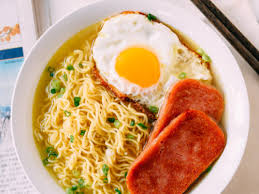

Simple Instant Noodles

Description
This is a simple Instant Noodles recipe with some toppings.
Instant noodles can be a really simple meal to make, but with the following suggestions you can elevate your instant noodle game!
Ingredients
- 1 packet of Instant Noodles
- 1 or 2 Green Onions
- 1 Chicken Egg
- Favorite Protein (processed or unprocessed) - For this recipe I'll be using spam (you can also follow along with some hotdogs)
Steps
- Boil 2 to 3 cups of water in a sauce pan
- In a separate pan, heat up some cooking oil and cook the protein
- Chop the green onion(s) into small sections
- Once the water is boiling, add the instant noodles and let it cook until somewhat soft
- Add the chicken egg and check to see if the protein is done cooking
- The instant noodles will be ready when the egg is no longer liquid
- Serve, add the cooked protein and sprinkle the chopped green onions and enjoy!